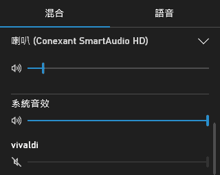

在登錄檔刪除新增移除程式無效的項目
HKEY_LOCAL_MACHINE\Software\Microsoft\Windows\CurrentVersion\Uninstall
滑鼠右鍵選單的「傳送到」
【使用者目錄】→「AppData」→「Roaming」→「Microsoft」→「Windows」→「SendTo」
滑鼠右鍵選單的「新增」
刪除項目的話，用「登錄編輯程式」，從 HKEY_CLASSES_ROOT 找與項目對應的副檔名，然後將 ShellNew 刪除。
修改檔案總管預設位置
Windows Vista 開始推出「媒體櫃」的概念，能夠自動化處理使用者的影音文件。但通常使用者操作的檔案，並非這些個人化的影音文件（甚至覺得裡面放的都是垃圾），因此跟進的意願不高。
這時以媒體櫃做為檔案總管的起始位置，並沒有比以前的「我的電腦」方便。
以「我的電腦」為預設位置
在檔案總管的滑鼠右鍵清單點「內容」，把「目標」改成：
explorer.exe ::{20D04FE0-3AEA-1069-A2D8-08002B30309D}
以後就會以我的電腦為預設位置。
自訂其他預設位置
explorer.exe /n, /e, 自訂路徑位置
Windows 10
進入檔案總管→檢視→選項→開啟檔案總管以→本機
修改註冊的使用者
這是在安裝 Windows 時填寫的使用者資訊，有「姓名」和「公司」兩筆。
Windows 並未直接提供修改這兩筆資料的程式，必須使用「登錄編輯程式」修改。
Windows 95/98/ME
按「開始」→「執行」→「regedit」，開啟「登錄編輯程式」，切換到：
HKEY_LOCAL_MACHINE\SOFTWARE\Microsoft\Windows\CurrentVersion
RegisteredOrganization 可修改公司，RegisteredOwner 可修改姓名。
Windows XP/Vista/7/8/10
跟 Windows 9x 一樣，只是切換機碼時 Windows 改成 Windows NT 而已：
HKEY_LOCAL_MACHINE\SOFTWARE\Microsoft\Windows NT\CurrentVersion
刪除「正在使用中」的資料夾或檔案
Windows Vista 系列的作業系統，比 Windows XP 更容易發生資料夾與檔案「正在使用中」的情形。要命的是，根本不告訴你究竟是哪一個程式使用！
用 Windows 8 內建的工具找出罪魁禍首
其實跟 Windows XP 一樣，用監測系統性能的「工作管理員」就可以追蹤了。
Step 1
開啟「工作管理員」→「效能」→「開啟資源監視器」。
Step 2
切換到「CPU」頁籤 → 在「關聯控制代碼」輸入被使用的資料夾。
Step 3
這樣就搜尋出使用這個資料夾的程式……不過，接下來就要靠自己經驗，判斷該關哪些程式不會當機～
清除通知區域裡無效的舊圖示
用 regedit.exe 到：
HKEY_CURRENT_USER\Software\Classes\Local Settings\Software\Microsoft\Windows\CurrentVersion\TrayNotify
刪除 IconStreams 與 PastIconsStream，然後結束 explorer.exe 並重新執行。
Windows Vista/7/8 桌布路徑
線上取得的佈景主題位置
C:\使用者\[使用者名稱]\AppData\Local\Microsoft\Windows\Themes\
作業系統內建桌布的位置
C:\Windows\Web\Wallpaper\
動態調整分割磁碟的容量
Windows Vista 開始，內建動態調整磁碟容量的功能，可以在不搬動檔案的情況下，調整各磁碟分割槽的容量大小。
操作過程，極可能導致重要檔案遺失，無法自行承擔風險者，請勿進行如下步驟。
Windows 8
「螢幕右角」→「設定」→「控制台」→「系統及安全性」→「建立及格式化硬碟磁碟分割」→先把覺得容量較多的磁碟槽「壓縮」，再把多出來的空間配給其它磁碟槽。
磁碟備份與還原
Windows 7 開始，作業系統內建磁碟備份與還原的功能，也就是不用花錢買 Ghost 或 True Image，也能整顆硬碟備份起來，以後即使將 C 槽格式化個精光，也能從被 D 槽備份的映像檔，還原作業系統。還原的速度不但比重灌 Windows 還快，而且善用磁碟備份更可以省下安裝應用軟體以及系統更新的時間～
Windows 7
「開始」→「控制台」→「系統及安全性」→「備份與還原」→「建立系統映像」
Windows 8
「螢幕右角」→「設定」→「控制台」→搜尋「Windows 7 檔案修復」→「建立系統映像」
Windows 8.1
「螢幕右角」→「控制台」→「系統及安全性」→「檔案歷程紀錄」→「系統映像備份」（在視窗左下角不顯眼的地方）
不建議的 Windows 服務項目
使用前觀念建立
在 Windows 95 到 Windows Vista 的時代，Microsot 總是喜歡塞很多東西給使用者，拖累系統效能，因此關閉用不到卻佔用系統資源的功能相當實際！那時處理器的運算速度，短短四年時間就從 75 MHz 提升到 1000 MHz，大多數人跟不上科技的進步，CPU 不夠快，所以關閉服務來優化系統。
到了 Windows 10 的時代，處理器擠牙膏式推出新規格，運算速度停滯，改從功耗和硬體加速提升電腦工作效率。現在關閉服務，等於把這些東西關閉，速度就飆不起來了！所以不再建議藉由關閉服務來優化系統～
特別是，原本喊說 Windows 10 是最後一個版本的關係，既然不用再打造新的作業系統，心思便都放在優化功耗和硬體加速的各種調校上，從版本 1511 到版本 2004，Windows 10 自己就在逐步停用用處不大又影響功耗性價的服務，所以其實不用再自己關閉服務，該關的都關了，再關只是破壞 Windows 10 調校好的良好體驗而已。
最後，優化過後，會忘了之前改過哪些東西，導致哪天想執行某功能出問題改不回來的人，請勿依照本文進行優化！反悔又不知道怎麼改回預設值的話，可在 Windows 10 Services 網站查看。
停用
Connected User Experiences and Telemetry
Problem Reports Control Panel Support
Windows Error Reporting Service
Windows Insider Service
Windows 測試人員服務（Windows Insider Service）
建議的疑難排解服務（Recommended Troubleshooting Service）
手動
Diagnostic Policy Service（停用的話影響工作管理員的應用程式歷程記錄）
Downloaded Maps Manager
IP Helper
Print Spooler
視情況啟動
BitLocker Drive Encryption Service：不想使用硬碟加密，且害怕硬碟哪天被加密惹麻煩的話停用。
Nahimic Service：優化音質用的，會讓程式啟動速度慢到懷疑人生，所以我選擇停用。
SysMain：以前叫 Superfetch，關閉會影響快速開機功能，建議保持自動。
Windows Biometric Service：停用會導致「帳戶」「登入選項」無法進入，建議保持手動。
Windows Search：有用到 HDD 硬碟的話建議「停用」，只有 SSD 硬碟的話保持自動。
DOS 指令
基本指令
| DIR | 顯示目錄中的檔案和子目錄清單。 |
| COPY | 將檔案複製到另一個位置。 |
| REN | 重新命名檔案。 |
| CD | 顯示或變更目前目錄的名稱。 |
| MD | 建立目錄。 |
| RD | 移除目錄。 |
| DEL | 刪除檔案。 |
| TYPE | 顯示文字檔的內容。 |
| SET | 顯示、設定或移除環境變數。 |
| PATH | 顯示或設定可執行檔的搜尋路徑。 |
| HELP | 為命令提供說明資訊。 |
| VER | 顯示版本。 |
| CLS | 清除螢幕。 |
實用指令
| COPY /Y NUL 檔案 | 建立新的檔案。 |
| FIND "字串" 檔案 | 搜尋一或多個檔案中的文字字串。 |
| TIMEOUT 秒數 | 等候指定的時間長度。 |
| XCOPY 被複製 複製到 /S /Y | 複製整個資料夾到… |
A、B、C、D 槽
從 A 到 E 的故事
PC 早期，硬碟是非常昂貴的配備，一般人保存資料都用軟碟。所以 MS-DOS 推出時，就將軟碟機這「標準配備」設定在 A 槽。
當時大家為了方便拷貝磁片，幾乎會有兩台磁碟機，因此 B 槽就是第二台軟碟機。
有錢才買的硬碟排在 C 槽。
後來光碟機流行，便排在 D 槽。
至於隨身碟，原則上排在 E 槽，但這時硬碟容量很大，通常至少會切割成 C、D 兩個槽1，變成光碟機排在 E 槽，隨身碟排在 F 槽，所以沒有人覺得隨身碟是 E 槽。
隨著時代進步，隨身碟退流行，由記憶卡取而代之，加上電腦開始講究輕薄與續電力，不再將光碟機列為標準配備（變成用外接的），記憶卡是 E 槽的印象還比較深。
關於磁片
MS-DOS 崛起時，8 吋磁片已經退流行，主流磁片是 5.25 吋，有 360KB 容量，後來一舉進步到 1.2MB。但 3.5 吋磁片有 1.44MB，面積小容易攜帶，厚度硬不怕折損2，沒多久就成為主流。
啟用 Administrator 系統管理員帳戶
以系統管理員身分執行「命令提示字元」，然後輸入：
net user administrator /active:yes
即可登出使用者帳戶後，選擇名稱為 Administrator 的帳戶來登入。
將 Windows 7 電腦設為 Wi-Fi 熱點
只要電腦可用 Wi-Fi 上網，且未連線，連線的是網路線，就可以將這台電腦設為 Wi-Fi Hotspot（熱點），讓電腦化身為網路分享器。
Step 1:
「控制台」→「網路和網際網路」→「網路連線」→「內容」→「共用」→ 勾選「允許其他網路使用者透過這台電腦的網際網路連線來連線」」→ 在「家用網路連線」選擇「Wireless Network Connection」
Step 2:
「控制台」→「網路和網際網路」→「網路和共用中心」→「設定新的連線或網路」→「設定無線臨機操作 (電腦對電腦) 網路」→ 依照圖形使用者介面設定 SSID 和密碼
用鍵盤移動滑鼠
啟動滑鼠鍵
按 Alt+Shift+Num Lock 可啟動滑鼠鍵，用鍵盤操作滑鼠。
移動滑鼠游標
Num pad 的方向鍵用來移動滑鼠游標，可用 Num 1、Num 3、Num 7、Num 9 斜著移動。
按 Ctrl 可以增加游標移動距離，Shift 則是減少游標移動距離。
滑鼠左鍵、滑鼠右鍵
用 Num / 切換滑鼠左鍵，Num * 切換滑鼠左右鍵（不是中鍵），Num - 切換滑鼠右鍵，再用 Num 5 單擊切換的鍵，或按 Num+ 雙擊切換的鍵。
拖曳
Num 0 用來 Drag，Num . 用來 Drop。
相容模式的檔案儲存位置可能另外放
我們常常會像在 Windows 7 以 Windows XP 相容模式執行程式。但有沒有覺得，有些程式保存資料好像是舊的？例如明明把某記錄檔刪除了，下次執行時居然出現那個記錄檔的訊息。或者明明把遊戲存檔覆蓋成別人的完美進度，進入時卻是自己仍在卡關的進度。
這是因為相容模式執行的程式，有自己讀寫檔案的路徑：
C:\Users\[使用者名稱]\AppData\Local\VirtualStore
資料不同步的問題，就是出在這個地方。因為不是不同步，而是我們不知道相容模式把資料檔案另外搞個地方來保存，讓我們搞錯檔案了～
從 Microsoft 帳戶切換為本機帳戶
Windows 8.1 開始，官方建議使用者以 Microsoft 帳戶登入 Windows，以整合網路功能提升 Windows App 的體驗。如果事後覺得這樣反而麻煩，可以切換為本機帳戶。
切換為本機帳戶
「螢幕右角」→「設定」→「控制台」→「使用者帳戶和家庭安全」→「使用者帳戶」→「在 [電腦設定] 中變更我的帳戶」→「 終止連結」→進行「切換至本機帳戶」的操作設定。
市集
要在市集安裝 App 的話，要求登入 Microsoft 帳戶時，點下方的「改為個別登入每個應用程式 (不建議)」，以後就和 Windows 8 的體驗一致了！
Windows App 問題
如果因為從 Microsoft 帳戶轉為本機帳戶，導致開始畫面的 App 故障，例如出現怪箭頭、而且開啟動態磚的選項也不見，可以刪除、重新安裝該 App 試試看。
開除「程式相容性助理」
「螢幕右角」→「設定」→「控制台」→「系統及安全性」→「系統管理工具」→「服務」→「Program Compatibility Assistant Service」→把「啟動類型」設為「已停用」
麥擱「正在尋找問題的解決方案」，從來就沒找到過 ╰(艹皿艹 )
Windows 8
「螢幕右角」→「設定」→「控制台」→「系統及安全性」→「重要訊息中心」→「維護(M)」→「檢查問題報告的解決方案」→「設定」→「永遠不檢查解決方案」
「螢幕右角」→「設定」→「控制台」→「系統及安全性」→「重要訊息中心」→「變更重要訊息中心設定」→取消「Windows 疑難排解」
Windows 10
「設定」→「更新與安全性」→「疑難排解」→「不執行任何疑難排解員」
關閉 Windows 8 自動維護
算是重要訊息中心比較煩人的訊息。如果維護得完就算了，但怎麼過老久了它還沒維護完？總讓人覺得關掉算了：
「螢幕右角」→「控制台」→「系統及安全性」→「排程工作」→依序展開「工作排程器程式庫\Microsoft\Windows\TaskScheduler」→停用「Idle Maintenance」「Regular Maintenance」
讓 Windows 8 開機時自動連線 ADSL
在 Windows 8 的工作排程用 rasphone.exe 連線，並不會自動登入，而是每次都跳出帳號密碼視窗要你按連線，所以改用：
rasdial.exe "連線名稱" "ADSL 帳號" "ADSL 密碼"
Windows 8 Charms
Windows 8 使用了新的 Toolbar 叫做 Charms，有意做為統一觸控與滑鼠的管理介面。
坦白說這是一場災難，例如我把 ADSL 連線設定非為固定 IP 與浮動 IP 以便手動切換，以前只要建立個捷徑到桌面，然後點兩下就直接連線了，現在居然就是得跳到 Charms，然後一步步點固定 IP 或浮動 IP 來連線。Windows 8 Charms 讓我多按了好幾下滑鼠～
另外，每次移動滑鼠到螢幕右下角想跳出 Windows Charms，要等個延遲時間才跳出，這也很惱人，讓我整個操作過程很不流暢。
修改 Windows 8 Charms 的延遲時間
進入 regedit.exe，找到：
HKEY_CURRENT_USER\Software\Microsoft\Windows\CurrentVersion\ImmersiveShell\EdgeUi
新增 DWORD 名稱為 CharmsBarDesktopDelay，數值資料為 0。
新增 DWORD 名稱為 CharmsBarImmersiveDelay，數值資料為 0。
這樣滑鼠移到右下角，不用延遲時間就能跳出 Charms 了。
關閉螢幕右上角跳出 Windows 8 Charms 的功能
當視窗放到最大時，滑鼠會移到螢幕最右上角，通常是為了按 X 關閉視窗，但卻老是跳出 Windows 8 Charms。幸好可以關閉：
「螢幕右角」→「設定」→「變更電腦設定」→「電腦與裝備」→「角落與邊緣」→「當我指向畫面右上角時，顯示常用鍵」→「關閉」
如何進入 Windows 8 的安全模式
或許是為了讓 Windows 8 感覺平易近人，所以把 Windows 作業系統慣有的「安全模式」給藏起來了。想按 F8 鍵進入安全模式維修作業系統的話，必須先讓相關選單顯示出來。真不方便啊～
推薦做法：用 Windows 8 安裝光碟開機
這是 Windows 8 進入安全模式最有效的做法！
但無奈的是，現在廠商很少提供安裝光碟，從早先改用還原光碟，然後連還原光碟也沒了要你自己燒，最後連燒都不行，只能從硬碟還原。
因此，買電腦的時候選空機，作業系統另外買，是值得考慮的做法。
另外，或許我們會抱怨買電腦時花了作業系統的錢，為何沒有安裝光碟可用？但如果看「空機 + Windows 8 隨機版」與「裝好 Windows 作業系統的電腦」兩者的價錢，沒有安裝光碟的其實便宜 800~1200 元左右。
折衷做法：製作系統修復光碟
Windows 8 可以讓使用者自己燒一片「系統修復光碟」，以這張光碟來開機，就可以透過選單進入安全模式。
Windows 8
「螢幕右角」→「控制台」→搜尋「Windows 7 檔案修復」→「建立系統修復光碟」
Windows 8.1
找不到，疑似取消製作系統修復光碟的功能了 Orz
原本以為會像 Windows 8 一樣，執行「建立系統映像」備份完以後，會詢問要不要建立系統修復光碟，但是…沒有。
第三種做法：開啟 F8 安全模式
啟用
「開始畫面」→「命令提示字元」→「以系統管理員身份執行」→輸入：
Bcdedit /set {bootmgr} displaybootmenu yes
→「重新開機按 F8 鍵」→選「Enable Safe Mode」
善後
由於先前是「啟用」安全模式的選單，所以如果維修好 Windows 8 以後，想恢復原來的狀態，請輸入：
Bcdedit /set {bootmgr} displaybootmenu no
最後一種做法（不建議使用）
開機時故意關閉個兩三次，就能進入「正在準備自動修復」，這時依序點「進階選項」→「疑難排解」→「進階選項」→「啟動設定」→「重新啟動」，就能進入含安全模式的選項畫面。
但這種故意不正常關機的做法，偶爾會損毀磁碟裡的資料，甚至倒楣的話會損壞磁碟，因此不建議使用！
在 Windows 8 設定 Wi-Fi 熱點
只要電腦可用 Wi-Fi 上網，且未連線，連線的是網路線，就可以將這台電腦設為 Wi-Fi Hotspot（熱點），讓電腦化身為網路分享器。
啟動 Wi-Fi 熱點
Step 1: 設定密碼
以系統管理員身分，啟動命令提示字元，輸入：
netsh wlan set hostednetwork mode=allow ssid=熱點名稱 key=熱點密碼
Step 2: 啟動熱點
繼續輸入：
netsh wlan start hostednetwork
Step 3: 設定熱點
「控制台」→「網路和網際網路」→「網路連線」→「區域連線」→ 勾選「允許其他網路使用者透過這台電腦的網際網路連線來連線」 → 在「家用網路連線」選擇「區域連線* 12」
其它操作
停止熱點
netsh wlan stop hostednetwork
檢視熱點
netsh wlan show hostednetwork
重設密碼
netsh wlan set hostednetwork key=密碼
netsh wlan refresh hostednetwork key
如何在 Windows 10 找到各個傳統桌面功能
Windows 10 每次改版會不斷加強通用平台的「設定」，然後就削弱原本整合在「控制台」的傳統桌面功能。
但通用平台設計的功能，往往不如使用傳統桌面設計的功能完整、好用，所以我們依然還是離不開過去那些放在「控制台」裡面的功能，卻已經不曉得被藏在哪了，翻來翻去很難找出來用～
對已經熟於 Windows XP 或 Windows 7 以「控制台」來管理作業系統的人，來到 Windows 10 最幹的，肯定是管理作業系統的那一套習慣，幾乎都得打掉重做！
Windows 10 最大的敗筆，其實就是整合在「設定」的功能，沒能一次性完整的取代「控制台」的功能，導致使用者兩頭跑。半吊子的「設定」慢慢隨著 Windows 10 改版補強過程中，再逐步把原本面面俱到的「控制台」削弱成半吊子，更是雪上加霜，註定兩頭跑，而不是至少用控制台一手搞定！
在「開始」按滑鼠右鍵選單的妙用
可以找到「事件檢視器」「裝置管理員」「磁碟管理」「電腦管理」等傳統桌面的功能。
舊版 Windows 10 原本還有「控制台」，現在被拔掉了！只好：「開始」→「所有應用程式」→「Windows 系統」→「控制台」，費時費力。要快點叫出控制台的話，還有一招就是：在「檔案總管」的路徑列，按最前頭的第一個下拉式按鈕，就有「控制台」。
傳統桌面的「系統」
「檔案總管」→「本機」→「滑鼠右鍵選單」→「內容」
系統還原
「設定」→「系統」→「關於」→「系統保護」
建立與修改本機帳戶
建立本機帳戶
「開始」→「設定」→「帳戶」→「家人與其他使用者」→「將其他人新增至此電腦」→「我沒有這位人員的登入訊息」→「新增沒有 Microsoft 帳戶的使用者」…
修改為本機帳戶
「建立並使用 Administrator 本機帳戶」→「開始」→「設定」→「帳戶」→「電子郵件與 App 帳戶」…「改為使用本機帳戶登入」。
從睡眠喚醒電腦時直接進入桌面而不是登入畫面
「開始」→「設定」→「帳戶」→「登入選項」→「Windows 應該在您離開多久之後要求您再次登入」（帳戶必須設定密碼才看得到這選項）→「永不」（設定後再把設定密碼為空即可解除密碼）
如何修改登入畫面的圖片
開機後的畫面有兩種，最先看到的是鎖定畫面，然後才是登入畫面。
鎖定畫面的圖片可以自行挑選圖片，而且有個「在登入畫面上顯示鎖定畫面背景圖片」的項目可以勾選，這樣就等於可以自行挑選登入畫面的圖片了！
但 Windows 10 剛開機、尚未登入使用者帳戶時，使用的是預設圖片，因此顯示的依然是這張醜圖片：
麻煩的是，預設圖片是從 C:\Windows\SystemResources\Windows.UI.Logon.pri 取出來的，等於寫死了，無法修改。
這問題可以透過關閉鎖定畫面，只留登入畫面來解決！因為進入登入畫面，看停留在哪個使用者帳戶，就會顯示該使用者設定的圖片。沒了鎖定畫面，開機後進入的一定是登入畫面，就不會看到 Windows 10 預設的圖片了～
關閉鎖定畫面要寫登錄檔：
[HKEY_LOCAL_MACHINE\SOFTWARE\Policies\Microsoft\Windows\Personalization]
"NoLockScreen"=dword:00000001
注意！寫入這筆登錄檔後，鎖定畫面的設定介面會顯示「*這些設定有一部分已隱藏或由您的組織管理。」而無法使用。所以，日後想更換鎖定畫面的圖片，必須再把 NoLockScreen 改為 0，就恢復正常了。
磁碟清理等超～～～～久
使用 Windows 10 內建的磁碟清理，按清理系統檔，勾選 Windows Update 清理，你會發現居然等了數小時還沒清理完～
這是因為磁碟清理想刪除這些檔案時，Windows Update 卻在做保護檔案該不該被刪除的動作，雙方僵持不下，導致一個簡簡單單刪除檔案的事，居然得耗掉二到四小時才跑完：「跑完還不見得有把檔案刪掉。」
與其勾選 Windows Update 清理，不如手動刪除 C:\Windows\SoftwareDistribution 底下的 Download 和 DataStore 吧～
手動刪除再跑磁碟清理的清理系統檔，很快就工作完畢，把剩下的垃圾清理完畢。
刪除內建防毒軟體的保護歷程記錄
C:\ProgramData\Microsoft\Windows Defender\Scans
事件檢視器 → 應用程式及服務紀錄檔 → Microsoft → Windows → Windows Defender → Operational → 清除記錄檔
讓 Modern UI 預設使用英數模式
雖然將微軟注音的預設輸入模式改為「英數模式」後，就能讓傳統桌面的應用軟體以英打開始，但開始畫面和工作列這些屬於 Modern UI 的部份，卻以 Windows 10 設定的語言區域決定預設輸入模式。
這時可用登錄檔修改：
[HKEY_CURRENT_USER\Keyboard Layout\Preload]
"1"="d0010404"
"2"="00000404"
[HKEY_CURRENT_USER\Keyboard Layout\Substitutes]
"d0010404"="00000409"
如何讓微軟注音的候選詞排在上面
必須圈選「候選字順序依使用頻率調整」，候選詞才會排在上面，否則會排在最後面。
像ㄧˋㄨㄟˋ的候選字長達十七頁，如果你不知道按↑直接跳到最後頁，而是按↓一頁頁去翻，真的會氣死。重點是誰知道他會長達十七頁？真的有可能按↓一頁頁翻，因為選字時按↓按順手了，忽然按↑總覺得「切換」不過來。
然而，「候選字順序依使用頻率調整」必須勾選「啟用個人化調整」才能圈選，如果受不了微軟注音智障選字怎麼辦？
很簡單，圈選完「候選字順序依使用頻率調整」再取消勾選即可「啟用個人化調整」！
勾選「啟用個人化調整」→圈選「候選字順序依使用頻率調整」→取消勾選「啟用個人化調整」。
版本 1803 的控制台沒有變更輸入法了
只能在難用到爆的「設定」，而且拆分成兩部份：
「裝置」→「輸入」→「進階鍵盤設定」（調整快捷鍵在這裡進行）
「時間與語言」→「語言」（新增輸入法在這裡進行）
從 Windows 8 開始，Windows 的輸入法就變得很麻煩、很難用。好不容易找到變通方法，結果又把設定的方法改來改去。誰知道哪天又亂改亂動的，又不曉得怎樣設定輸入法了～
關閉工作列預覽縮圖
[HKEY_CURRENT_USER\SOFTWARE\Microsoft\Windows\CurrentVersion\Explorer\Advanced]
"ExtendedUIHoverTime"=dword:00009000
[HKEY_CURRENT_USER\SOFTWARE\Microsoft\Windows\CurrentVersion\Explorer\Taskband]
"NumThumbnails"=dword:00000000
可不可以不要再為每個檔案勾選「解除封鎖」 (#`Д´)ﾉ
網路來的檔案，得一個個用滑鼠開啟右鍵選單按「內容」→「一般」→「解除封鎖」，不能批次處理，實在有夠折騰人！
像我經常會從網頁瀏覽器拉一堆 URL 檔案，一個個解除封鎖心情會很糟！
所以我乾脆取消這功能算了：
[HKEY_CURRENT_USER\SOFTWARE\Microsoft\Windows\CurrentVersion\Policies\Attachments]
"SaveZoneInformation"=dword:00000001
直接拔 USB 隨身碟，不用安全移除。
滑鼠右鍵選單→內容→硬體→（隨身碟）→內容→變更設定→原則→快速移除…
關閉或解除安裝 OneDrive
以系統管理員身分執行命令提示字元，輸入：taskkill /f /im OneDrive.exe 終止程序，再輸入 %SystemRoot%\SysWOW64\OneDriveSetup.exe /uninstall 解除安裝，最後用 regedit.exe 做如下設定：
[HKEY_CLASSES_ROOT\CLSID\{018D5C66-4533-4307-9B53-224DE2ED1FE6}]
"System.IsPinnedToNameSpaceTree"=dword:00000000
[HKEY_CLASSES_ROOT\Wow6432Node\CLSID\{018D5C66-4533-4307-9B53-224DE2ED1FE6}]
"System.IsPinnedToNameSpaceTree"=dword:00000000
就能檔案總管側邊的 OneDrive 隱藏起來。
或參考 Microsoft 官方文件《關閉或解除安裝 OneDrive》，但有點冗長。
解除安裝 Windows 備份 APP
2023 年九月更新（KB5030211）後，Windows 10 多了「Windows 備份」這個 APP，即使在「設定」中關閉不使用，也會在工作管理員的應用程式歷程記錄中看到這東西資源使用率排第一，看了很想刪除。
然而，Windows 備份並不是獨立的 APP，而是 Windows 功能體驗套件1 的其中一個工具，想刪除的話得刪除整個 Windows 功能體驗套件，內含 emoji 面板、剪取工具、歷史剪貼簿之類的實用工具，確定你不需要這些工具才操作本文內容。
首先我們要掃描出 Windows 功能體驗套件的名稱和版號！以系統管理員身份，進入命令提示字元，執行下面指令：
DISM /Online /Get-Packages
然後找類似如下的名稱，把版號最高的整行複製下來，可以按 Ctrl=F 搜尋：
Microsoft-Windows-UserExperience-Desktop-Package~31bf3856ad364e35~amd64~~10.0.19041.版號
這樣就能輸入下面指令移除套件：
DISM /Online /Remove-Package /PackageName:[套件名稱和版號]
會以進度列顯示移除過程，然後詢問是否重新開機以完成解除安裝的工作。
反悔想恢復的話：
DISM /Online /Add-Capability /CapabilityName:Windows.Client.ShellComponents~~~~0.0.1.0
移除 Microsoft Store 各式應用
看要移除哪個應用，然後以 PowerShell 輸入指令…
People
Get-AppxPackage *people* | Remove-AppxPackage
Microsoft 相片
Get-AppxPackage *photos* | Remove-AppxPackage
鬧鐘與時鐘
Get-AppxPackage *windowsalarms* | Remove-AppxPackage
相機
Get-AppxPackage *windowscamera* | Remove-AppxPackage
地圖
Get-AppxPackage *windowsmaps* | Remove-AppxPackage
財經
Get-AppxPackage *bingfinance* | Remove-AppxPackage
新聞
Get-AppxPackage *bingnews* | Remove-AppxPackage
運動
Get-AppxPackage *bingsports* | Remove-AppxPackage
天氣
Get-AppxPackage *bingweather* | Remove-AppxPackage
OneNote
Get-AppxPackage *onenote* | Remove-AppxPackage
語音錄音機
Get-AppxPackage *soundrecorder* | Remove-AppxPackage
行事曆
Get-AppxPackage *windowscalculator* | Remove-AppxPackage
郵件
Get-AppxPackage *windowscommunicationsapps* | Remove-AppxPackage
手機小幫手
Get-AppxPackage *windowsphone* | Remove-AppxPackage
Xbox
Get-AppxPackage *xboxapp* | Remove-AppxPackage
Groove 音樂
Get-AppxPackage *zunemusic* | Remove-AppxPackage
Movies & TV：
Get-AppxPackage *zunevideo* | Remove-AppxPackage
Microsoft Solitaire Collection
Get-AppxPackage *solitairecollection* | Remove-AppxPackage
移除檔案總管在本機時的 3D 物件資料夾
Windows 10 秋季創意者更新開始，檔案總管的本機，在資料夾分類多了「3D 物件」，用不到的人感覺很多餘。
寫登錄檔：
[HKEY_LOCAL_MACHINE\SOFTWARE\Microsoft\Windows\CurrentVersion\Explorer\
FolderDescriptions\{31C0DD25-9439-4F12-BF41-7FF4EDA38722}\PropertyBag]
"ThisPCPolicy"="Hide"
重新登入或下次開機時，就不會看見 3D 物件資料夾了。
修復「新增移除程式」消失不見的發行者和安裝於
Alt→工具→資料夾選項→檢視→重設資料夾
某軟體忽然沒聲音
所有軟體都很正常，偏偏只有某個軟體沒聲音，那問題可能出在 Windows 10 的 Xbox 遊戲列！這玩意兒可以調整每個影音軟體的影像與聲音，有可能我們的某個軟體被它動手腳了～
首先開啟出問題的應用軟體，並且重現沒有聲音的情況。不能只是進入軟體而已，要讓軟體明明有播放音效，只是我們聽不到。
然後按 WIN+G 鍵啟動 Xbox 遊戲列，查一下「音訊」的部分，看軟體的音效是不是被關掉了：

像我是 Vivaldi 瀏覽器忽然沒聲音，沒辦法在 YouTube 好好看片。
開啟後就恢復正常了。
大概不曉得按了什麼快捷鍵，不小心啟動 Xbox 遊戲列的關閉音效功能吧？怎麼按法我就不知道了。
版本 2004 無法切換內顯和獨顯
在以往，要對遊戲或軟體手動設定使用「內建顯示晶片」還是「外接顯示卡」，是透過外接顯示卡安裝的軟體來進行，例如「NVIDIA 控制面板」或「Radeon 設定」。
從 20H1 開始，這些設定被無視了！由 Windows 10 依據自己內部的設定進行，所以必須改用 Windows 10 提供的設定方式：
設定 → 系統 → 顯示器 → 圖形設定 → 瀏覽 →（選擇想要設定的程式）→ 選項 → 省電 或 高效能
「省電」就是內建顯示晶片，「高效能」就是外接顯示卡。
Windows 10 優化
C 槽→內容→工具→最佳化→已排程的最佳化：關閉
電源計畫→關閉硬碟前的時間→永不
允許喚醒計時器→停用
裝置管理員→網路介面卡→電源管理→允許電腦關閉這個裝置以節省電源：取消勾選
→滑鼠及其他指標裝置→電源管理→允許這個裝置喚醒電腦：取消勾選
→鍵盤→電源管理→允許這個裝置喚醒電腦：取消勾選
控制台→硬體和音效→電源選項：高效能
→讓電腦睡眠→永不
勾選檔案總管的「在個別的處理程序開啟資料夾視窗」可解決「內容」檢視模式遇到影音檔案會卡頓的問題。
如何進入 Windows 10 的安全模式
跟 Windows 8 一樣，取消開機時按 F8 進安全模式的設計。但 Windows 10 提供圖形化介面，照步驟按就可以進安全模式：
「開始」→「設定」→「更新與安全性」→「復原」→「立即重新啟動」→「疑難排解」→「進階選項」→「啟動設定」→「重新啟動」→「4) 啟用安全模式」
只是，通常進不去 Windows 才會想進安全模式1，Windows 8 和 Windows 10 卻是在進得去 Windows 的時候才能進安全模式。
Windows 10 掛掉想進安全模式，只能用安裝碟。
幸好 Microsoft 官網提供 ISO 檔，開放大家製作 Windows 10 安裝碟，而且除了燒成 DVD 安裝光碟，還能製作 USB 安裝隨身碟。所以想進安全模式，最好的做法還是製作 Windows 10 安裝碟，以備不時之需。
各版最新 Visual C++ 可轉散發套件
並不是安裝最新版 Visual C++ 可轉散發套件，就能跑所有 Visual C++ 寫出來的程式，常常跑 A 遊戲需要 Visual C++ 2008，跑 B 遊戲需要 Visual C++ 2010，搞到後來乾脆把所有版本都安裝算了！
然而，不但 Visaul C++ 可轉散發套件有 2005、2008、2010、2012、2013、20XX 眾多版本，每版 Visual C++ 還有不同更新版，Microsoft 官網卻不會告知你下載了舊版、有漏洞的 Visual C++ 可轉散發套件，大喇喇繼續擺著讓你下載。
因為下載並安裝有漏洞的 Visual C++ 可轉散發套件安裝，Windows 會「工程浩大」的自動更新。但自己下載最新版本的檔案來安裝，大小不會超過 10MB，安裝又快，不用三分鐘就能搞定，誰要安裝有漏洞的版本，然後花十幾分鐘去更新？說不定更新完還要重新開機 XDDD
偏偏 Google 的話，排在最上面的通常是有漏洞的版本，所以就整理這份清單了～
手工編輯登錄檔
我的第一個登錄檔
如果希望開機時啟動 NumLock 鍵，我們會在「登錄編輯程式」中，設定 HKEY_USERS\.DEFAULT\Control Panel\Keyboard 中的 InitialKeyboardIndicators 為 2。但每次都要執行 regedit，然後在「登錄編輯程式」那邊翻找，如果要修改的機碼很多，會是非常沒有效率的事～
如果寫成登錄檔，就能一鍵搞定！以上面的例子來說，開啟「記事本」，照如下格式輸入：
Windows Registry Editor Version 5.00
[HKEY_USERS\.DEFAULT\Control Panel\Keyboard]
"InitialKeyboardIndicators"="2"
然後儲存為 NumLock.reg 檔案，以後就能點兩下這個登錄檔來設定機碼的資料了！
其它型態的資料
上面例子寫入的資料是「字串」，其它最基本的，還有輸入十六進位值的 DWORD 值，以及二進位值，來看範例：
Windows Registry Editor Version 5.00
[HKEY_CURRENT_USER\Software\MyRegistry]
"MyString"="ABCDE"
"MyWord"=dword:0000d431
"MyBinary"=hex:68,65,6c,6c,6f
字串使用雙引號括住資料。十六進位值使用 dword: 開頭，後面輸入八個位數。二進位值使用 hex: 開頭，後面使用 , 一組一組接連寫入二進位資料。
這些只是最基本的，還有更多種類的型態可用，不過其實連 DWORD 和 BINARY 都用不太到，更別說其它的了！無論要寫入文字還是整數，幾乎都是都用字串的方式來寫入，是最直覺的做法～
刪除機碼或登錄值
要刪除機碼中的某一筆登錄值，將其設為 - 號：
Windows Registry Editor Version 5.00
[HKEY_CURRENT_USER\Software\MyRegistry]
"MyString"=-
要刪除整個機碼，在開頭使用 - 號：
Windows Registry Editor Version 5.00
[-HKEY_CURRENT_USER\Software\MyRegistry]
術語解釋
在「登錄編輯程式」中，長得像「資料夾」可以一層層切換的，叫做「機碼」，裡面可以有「數值」（無論字串、二進位、還是 DWORD 都叫數值），「數值」裡面有「名稱」和「資料」。
手工製作媒體播放清單
M3U
這是最簡單的播放清單格式，使用純文字文件，把檔名照播放順序一行一行寫下來，儲存為 *.m3u 檔案即可：
幾乎所有媒體播放程式都支援。
也可以只接寫資料夾名稱，會自動照檔名順序播放。
ASX
ASX 是 Advanced Stream Redirector 檔案格式的副檔名，由 Microsoft 為 Windows Media Player 以 XML 格式所規範的檔案，網頁標記時 type 為 video/x-ms-asf。
基本做法
用純文字文件，以如下格式，製作你的播放清單：
然後儲存為 *.asx 檔案，即可播放。
指定從哪個時間開始播放、以及播放多久
將從第 15 秒開始播放，且播放 3 秒鐘。
日文檔名
雖然新版 Windows 已支援 Unicode 檔名，但是在 ASX 使用非本在地的字元時，卻無法順利播放。這時只要告訴 ASX 使用哪種編碼即可，底下示範 UTF-8：
當然，存檔時記得選 UTF-8 編碼。
WPL
Windows Media Player 9 開始，以 WPL（Windows Media Player Playlist）做為預設的播放清單格式。它可以建立動態播放清單，這是 ASX 與 M3U 格式無法做到的…但 WPL 不能做到的事更多，並沒有 M3U 和 ASX 好用。格式如下：
儲存為 *.wpl 副檔名的檔案即可。
開啟音效卡錄音功能
有些音效卡預設將「混音」關閉，只要手動開啟，就能用錄音軟體直接錄下音效卡發出的聲音。
Windows 7
其中又以 Windows 7 最不像話，它把未開啟的選項隱藏起來，結果幾乎每個人看了都以為自己音效卡不支援錄音功能。
為了更清楚說明，本文示範在 Windows 7 開啟 Realtek High Definition Audio 的 Stereo Mix 裝置。
Step 1
滑鼠點擊「開始」→「控制台」→「硬體和音效」→「聲音」，然後在跳出的視窗，將頁籤切換到「錄製」，如圖：

Step 2
在聲音視窗畫面的空白處按滑鼠右鍵來跳出選單，然後勾選「顯示已停用的裝置」。

Step 3
這樣就會看到未開啟的裝置以半透明的圖示呈現出來：
Step 4
開啟這個裝置吧！這樣就能錄製音效卡發出的聲音了！

緩解 ROG Zephyrus 筆電重低音喇叭破音問題
播放一般聲音都沒問題，但遇到重低音時，就像用已經損壞的喇叭一樣，聲音破掉非常難聽，那難聽的聲音還會振動空氣傳過來，讓人不舒服，完全就是噪音折磨。
問題出在 Smart AMP 智慧放大器，技術簡介說得很好聽，翻成白話就是：「我不想給你好的喇叭，所以發明一個能讓破喇叭聽起來跟好喇叭一樣讚的 Smart AMP 技術，然後給你破的喇叭。」
所以解決辦法，就是別用 Smart AMP 假裝破喇叭是好喇叭，只用 Windows 預設的標準音質即可：
「控制台」→「硬體和音效」→「聲音」→「喇叭」→「內容」→「進階」→取消「啟用音訊增強」的勾選
這做法能解決重低音喇叭爆音的問題，缺點是 Sonic Sutio 3 設定的音質無法發揮作用。但我寧可聽 Windows 那廉價的聲音，也不想聽折磨人的噪音。
在雙顯筆電中，強制使用獨立顯示卡，不要自動切換。
Windows 8
「螢幕右角」→「設定」→「控制台」→「硬體和音效」→「NVIDIA 控制面板」→「管理 3D 設定」→「廣域設定」→「慣用的圖形處理器」→「高效能 NVIDIA 處理器」
然而，雙顯筆電的好處，就是省電長效，所以不建議這樣做。應該把「廣域設定」的部分，改為在「程式設定」中，一一挑選列出的遊戲軟體，個別將慣用的圖形處理器指定為獨立顯示卡即可。
用 Windows 10 的夜間光線解決 IPS 面板螢幕過亮而刺眼的問題
IPS 面板的螢幕活像日光燈一樣，光線非常強烈，尤其是白色，看久了會很刺眼不舒服，眼睛像被辣到一樣流淚，因此濾藍光是很重要的！
然而，螢幕自帶的濾藍光功能，若非通過萊茵認證或直接濾掉機器本身的有害藍光，而是一鍵調整 RGB 藍色調那種，會使畫面嚴重偏黃，顏色失真不好看。調暗也不是好方法，IPS 面板不是太亮就是太暗，很難調到你覺得舒適的亮度。
其實有個更好的做法！把螢幕的濾藍光關掉，改用 Windows 10 的「夜間光線」！然而這功能設計得很考驗益智能力，要「永久」啟動這個功能，必須先關掉幾點到幾點這段時間內才會變暗的「排程夜間光線」功能：
「設定」→「系統」→「顯示器」→「夜間光線設定」→「排程夜間光線」→「關閉」
然後按同一個畫面上方的「立即開啟」按鈕，並把「強度」調降為 10，這樣原本活像直接看日光燈的死白顏色，就會變得像牆壁粉刷一般的象牙白，看起來很舒服，不再辣眼睛。
注意！不要從「設定」→「系統」→「顯示器」→「夜間光線」底下的切換開關，來開啟或關閉夜間光線！因為，這個開關應該正名為「排程夜間光線」，從這裡開啟夜間光線，會同時開啟「排程」，無法永久開啟夜間光線。
對了，記得設定一下螢幕的「色溫」，有濾藍光功能的螢幕通常預設為「暖色溫」，請改為「標準」，才不會嚴重偏黃而失真。只靠 Windows 10 的夜間光線讓顏色變暖就夠了，效果更自然，顏色不失真。
安裝編碼包後影片出現綠影
問題
無論安裝 K-Lite Codec Pack 或 STANDARD/ADVANCED Codecs 之類的編碼包，看影片有時會出現綠影：
解法
Step 1
執行編碼包隨附的 Codec Tweak Tool 程式。
Step 2
按 DirectShow Filters 鈕。
Step 3
按 LAV Video decoder。
Step 4
按 Hardware Decoder to use 底下的下拉式清單，改成 DXVA2 (native) 或 None 或 NVIDIA CUVID1，即可解決問題。
Aegisub 設定集
關閉拼字檢查
「View」→「Option」→「Interface」→取消「Enable syntax highlighting」的勾選
自動掛載連結影音
「View」→「Option」→「General」→將「Automatically load linked files」設為「Always」
音訊改用聲波
「Audio」→「Waveform Display」
youtube-dl 設定集
http://github.com/yt-dlp
直接以 640x360 解析度下載 YouTube 播放清單
登入帳號下載影片，Chromium 適用
其他瀏覽器請修改 --cookies-from-browser 參數。
啟用終極效能電源計劃
Windows 10 並不是只有省電、平衡、高效能三種電源計劃，還有一種隱藏起來，必須輸入指令才能啟用的終極效能：
POWERCFG -DUPLICATESCHEME e9a42b02-d5df-448d-aa00-03f14749eb61
修改網路連線的名稱
網路連線的名稱重複時，Windows 會自動在字尾加上 2 啊 3 啊的來區別。
覺得難看想改的話：
HKEY_LOCAL_MACHINE\SOFTWARE\Microsoft\Windows NT\CurrentVersion\NetworkList\
Profiles\
一個個找，在 ProfileName 看到想改的名稱就修改吧～
P2P 檔案共享軟體
這類軟體沒顧及到保護使用者的隱私，以 eMule 為例，該軟體在下載的同時也會上傳檔案，還將 IP 公開出來，這樣的設計，在下載行為觸法的同時也非法分享了檔案，所以網路巡警可以直接根據 IP 上門抓拿現行犯！BT 之類的 *.torrent 也是，有公司專門網釣使用者下載影片，再循 IP 要求賠償非法下載的行為，否則告上法院。
在台灣已發生多起警方持搜索票上門逮人並查扣電腦的案件，代理商也開始故意藉由 torrent 網釣使用者犯罪來抓盜版，上網 Google 就知道嚴重性，所以不建議再用 P2P 檔案共享軟體：「P2P 點對點的那個『點』，就是犯罪者的行蹤，可以做為指證現行犯的證據！」
雖然 P2P 是分享資料檔的技術，不是分享與下載盜版的技術，技術本身沒問題。但真要私下共享資料檔案的人，根本不會使用 P2P，而是用有金鑰保護的網路硬碟。反觀出現在 P2P 軟體的，幾乎都是盜版漫畫、影音、遊戲，哪有什麼共享的資料檔？所以只要有這類軟體，你就會哪天頭腦不清楚，下載盜版軟體和影音，赤裸裸的在監視者跟前犯法。
所以本站決定移除相關連結，以免誤導使用者觸法被抓。
滑鼠指標移動速度
1/11 0.03125
2/11 0.0625
3/11 0.25
4/11 0.5
5/11 0.75
6/11 1.
7/11 1.5
8/11 2.
9/11 2.5
10/11 3.
11/11 3.5